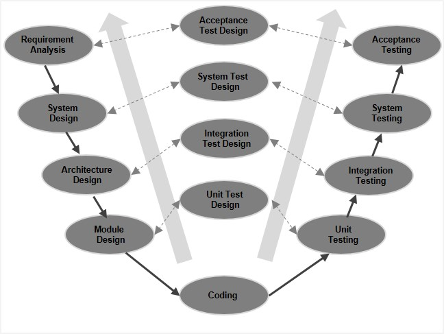

V-mudel: süsteemne arendusmetoodika
Mis on V-mudel?
V-mudel (V-shape model) on tarkvaraarenduse elutsükli mudel,
mis on kaskaadmudeli (Waterfall) edasiarendus.
Selle eripära seisneb selles, et igale arendusetapile
vastab kindel testimisetapp.
Protsess moodustab visuaalselt „V“-tähe kuju.
V-mudeli etapid
V-mudel jaguneb kaheks peamiseks haruks:
vasakpoolne haru keskendub arendusele ja verifitseerimisele,
parempoolne testimisele ja valideerimisele.
1. Vasak haru: verifitseerimine (arendus)
-
Nõuete analüüs:
kogutakse süsteemi nõuded ja määratletakse
aktsepteerimistestimise kriteeriumid.
-
Süsteemidisain:
määratakse süsteemi arhitektuur
ning riist- ja tarkvaralised nõuded.
-
Arhitektuurne disain:
kirjeldatakse moodulite struktuur
ja nendevaheline suhtlus.
-
Moodulite disain:
koostatakse detailne plaan
iga üksiku komponendi jaoks.
2. Põhietapp: kodeerimine
V-mudeli alumises punktis toimub tegelik
tarkvara arendus vastavalt koostatud
disainidokumentidele.
3. Parem haru: valideerimine (testimine)
-
Ühiktestimine:
testitakse üksikuid mooduleid.
-
Integratsioonitestimine:
kontrollitakse moodulite omavahelist koostööd.
-
Süsteemitestimine:
hinnatakse kogu süsteemi toimimist tervikuna.
-
Aktsepteerimistestimine:
kinnitatakse vastavus algsetele
kasutaja nõuetele.
Alamvariandid ja variatsioonid
Klassikaline V-mudel on üsna jäik,
kuid praktikas kasutatakse ka mitmeid
kohandatud versioone:
-
Dual Vee Model:
sobib keerukatele süsteemidele
mitme paralleelse arendustsükliga.
-
W-mudel:
testimine toimub täielikult
paralleelselt arendusega
alates nõuete kogumisest.
-
Iteratiivne V-mudel:
võimaldab V-mudelit rakendada
lühemates ja korduvates tsüklites.
Arendusmudeli skeem
V-mudeli visuaalne kujutis:

Tähtsaim omadus: varajane testimise planeerimine
V-mudeli keskne omadus on
testimise planeerimine juba varajases faasis.
Erinevalt kaskaadmudelist ei jäeta testimist projekti lõppu.
Testimisstrateegia ja testjuhud luuakse paralleelselt
arendusetappidega, mis võimaldab
vigu ja nõuete vastuolusid avastada varakult
ning vähendada paranduskulusid.
V-mudeli eelised ja puudused
| Eelised |
Puudused |
| Selge struktuur ja lihtne projektijuhtimine |
Väga piiratud paindlikkus muudatustele |
| Varajane testimine tagab kõrgema kvaliteedi |
Töötav tarkvara valmib alles projekti lõpus |
| Vähendab vigade parandamise kulusid |
Suur risk ebaselgete nõuete korral |
| Sobib turva- ja ohutuskriitilistele süsteemidele |
Ei sobi dünaamilistele ja muutuvatele projektidele |